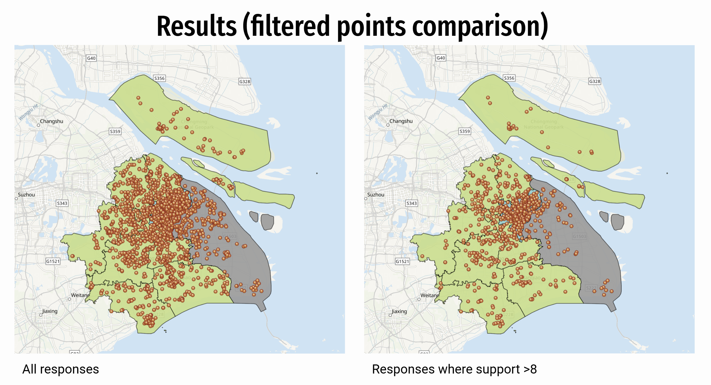
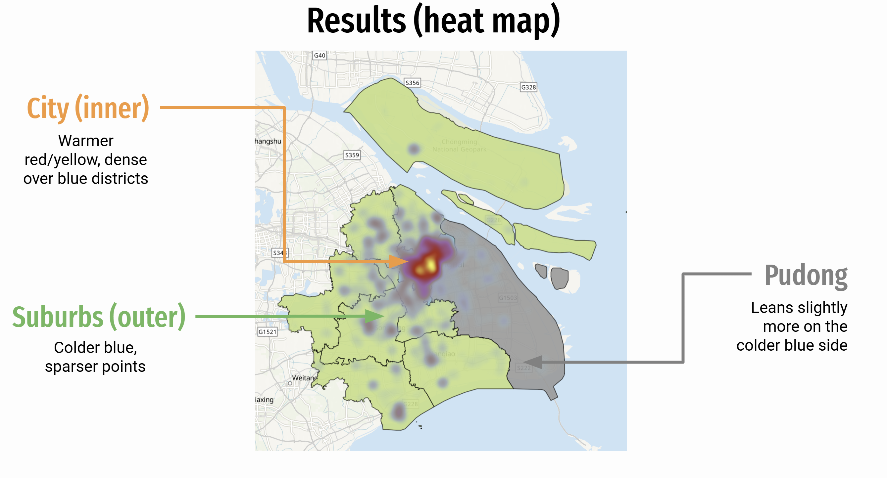
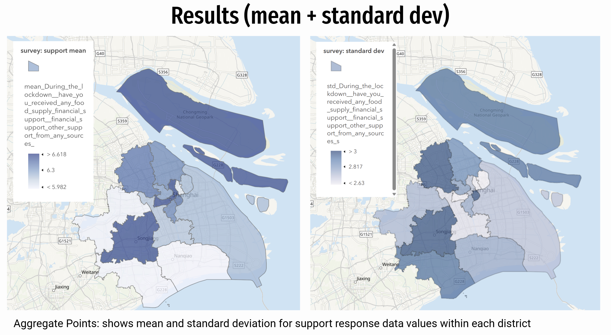
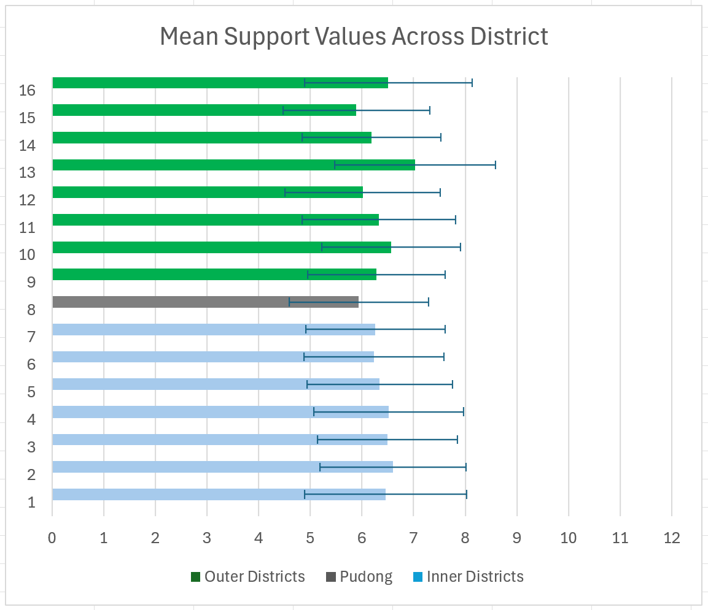
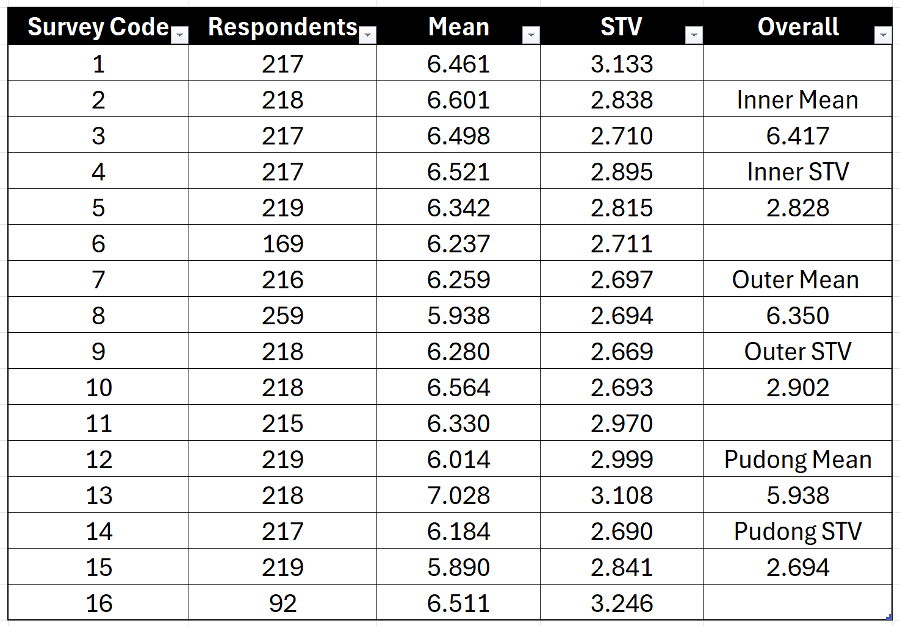

Problem Set 1 · October 2026
Entry: Shanghai COVID-19 Support Scores
The question
During the Shanghai COVID-19 lockdown, did the percentage of residents with access to a support system increase in the inner districts compared to the outer districts of the city?
The data
Files: LAB04_shanghai-lockdown-survey.csv (田林, 康桥镇, 川沙新镇) and LAB04_shanghai-districts.geojson (from DataV.GeoAtlas)
Source: Text formats, Class Brightspace page files, Retrieved on 10/16/2026
Sampling Design: Purposive Sampling (quota ~200 for each of 16 districts, with 10% oversampling)
When the Survey file was set to UTF-8, characters became nonsense. The file needed to be set to an encoding of GB18030, which represents a Chinese national character standard on Windows. However, 533 of these rows read as 空, or Chinese for “empty”. There is no data with geometry attributed to it, so only 2795 out of 3348 respondents are accounted for.
The Boundaries file does not carry a license statement nor an accuracy figure and contact information. The original survey contained sensitive identifiable health information in the form of street addresses of most respondents, which was removed in this version of the file.
The method
Define: Perceived support was measured on a scale of 0-12, with higher numbers corresponding to subjective higher support received by the respondent. A score of 8 or greater was used to denote respondents who were well-supported, and the midpoint of 6 was a marker for those who felt neither neglected nor well-supported.
Maps and visualizations were created through ArcGIS Online, and calculations and charts for 3348 respondents were created through Microsoft Excel.
Observe Overall Survey Points: 1) Filter 2795 points with valid geocoded data to only respondents with support scores of 8 or greater. 2) Display as survey points into two maps of overall and filtered. 3) Display filtered points as heat map to determine any potential clustering.
Aggregate Points: 1) Run aggregate points to group all respondents into a district based on geocoded coordinates. 2) Calculate mean and standard deviation for each district. 3) Display as color coded choropleth for both mean and standard deviation.
Reinput Missing Respondents: 1) Filter column by self-reported district. 2) Calculate mean and standard deviation per district. 3) Display as a chart, grouped into inner and outer districts by color, along with variation bars of STV/2.





What I found
“Unweighted shares from the 2022 Shanghai Lockdown Survey, a
purposive online sample: 2,795 of 3,348 respondents had a
coordinate. Groups were defined by inner urban districts vs outer suburban/rural districts by Baidu Wiki.”
Inner districts were slightly more supported compared to outer districts, although the margin of difference was very little. Overall, all 16 districts had an average support score of around 6.5, meaning residents did not meet this report’s set standard of feeling well-supported.
Outliers include inner district Hongkou reporting lower support for residents, and outer district Chongming reporting higher support. An inner district having lower support could be explained due to older infrastructure in certain areas or neighborhoods with larger elderly populations, who may not be as well adjusted to new technology or the types of resources the city might be giving out. Chongming on the other hand, is separated by a water boundary and largely consists of rural agricultural areas. It could be likely that residents have already been self-sufficient and provide their own food supply, while also having closer communities, even before the lockdown. As a result, when COVID-19 hit, respondents in Chongming could have reported stronger support due to experiencing less drastic changes in their lifestyles.
What this does not show
Limitations of the dataset include the purposive sampling factor, which means respondents per district must hit a quota and are not representative of random sampling. Also, Another limitation on ArcGIS Online was the hidden removal of 533 respondents without a valid geocoded coordinate. While analyses were being run, these responses were removed as they could be displayed on the ArcGIS map, leaving a total of only 2795 survey points. The sensitivity check was designed around this, calculating the mean and standard deviation on Microsoft Excel without a display. All 3348 respondents were included, and were grouped by their own self-reported district rather than a geocoded coordinate value. The results were similar to ArcGIS, where inner districts had a slightly higher average of support scores, yet overall for all 16 districts, most Shanghai residents neither felt neglected or well-supported and instead reported a score of around 6.5.
AI use: No AI tools were used for this entry.